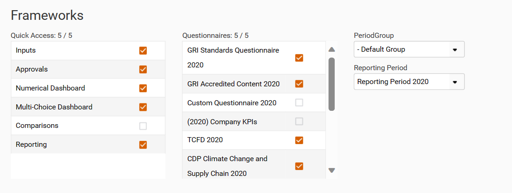
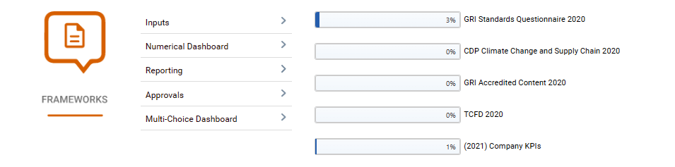

Depending on the areas of the Frameworks module that you have access to you will be able to select up to 4 shortcuts that will appear on your customized homepage.
For the Frameworks module first select the ‘Period Group’ and ‘Reporting Period’. The questionnaires that are available will then display and you can select up to 5 of these to be displayed on your customized home page.

To quickly access a screen within the Frameworks module, click on that screen's shortcut tile. The % completion of the selected questionnaires is displayed on the right of this screen.
